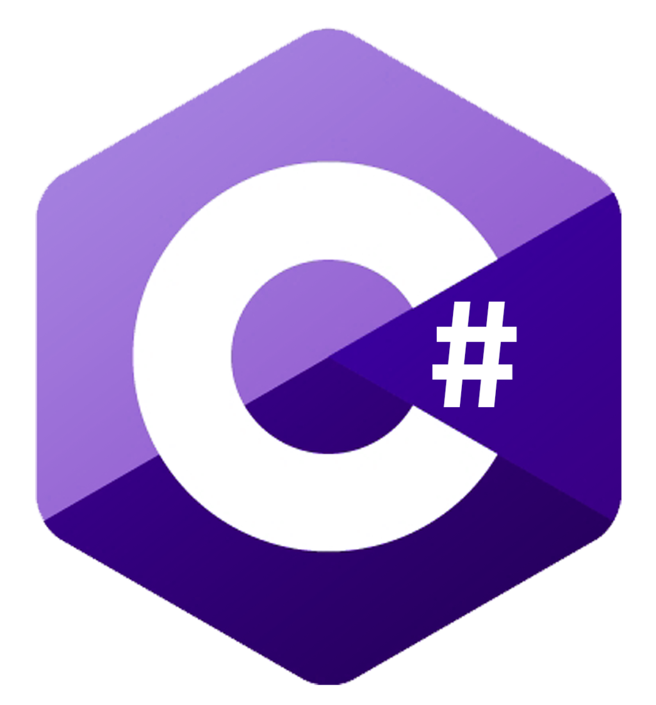
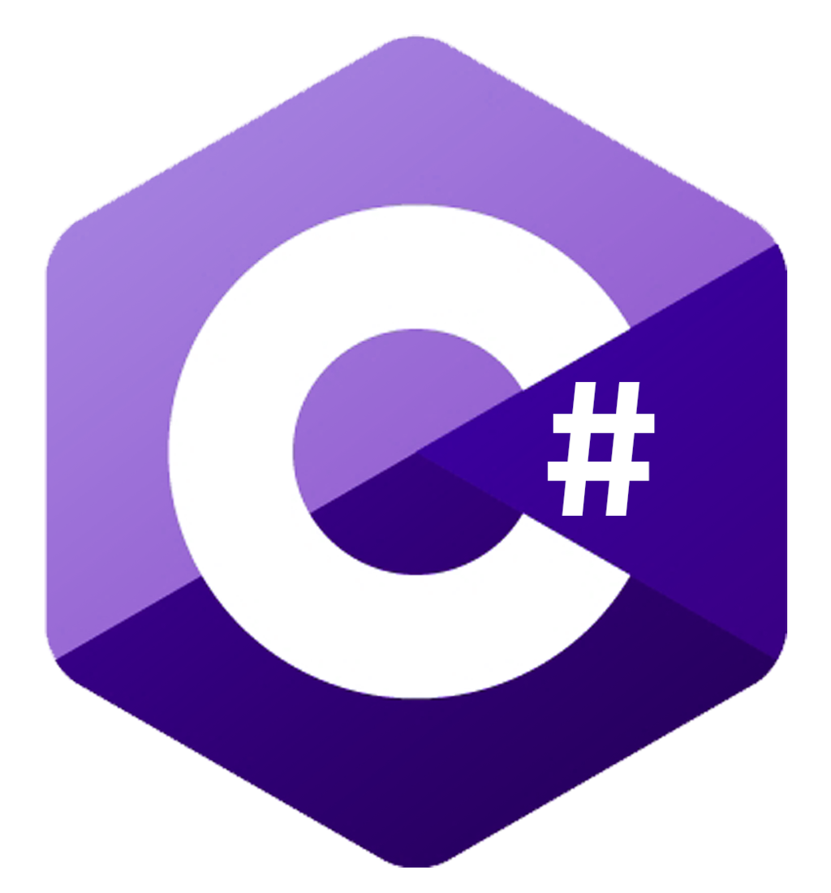

David Robert Pruitt
Missouri University of Science and Technology
Computer Science
Masters of Business Administration

Missouri University of Science and Technology
Computer Science
Masters of Business Administration
 



Other Languages Include: NodeJS, jQuery, KnockoutJS, Assembly, C, PHP, Bootstrap
Other Tools Include: Github, Visual Studio, Android Studio, Subversion